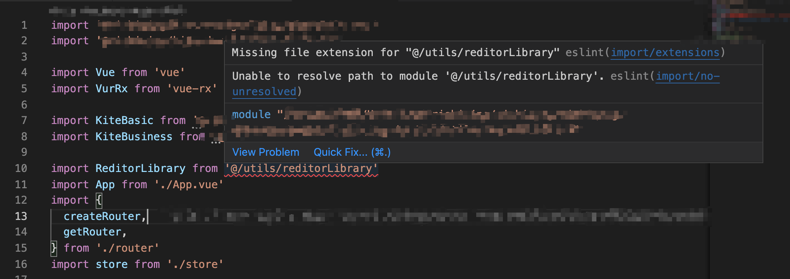
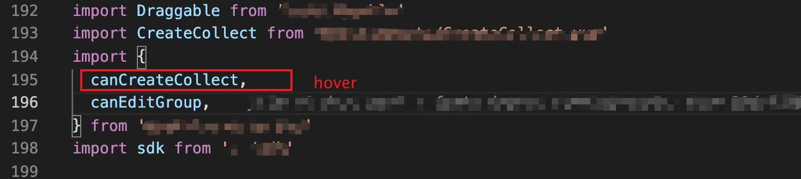
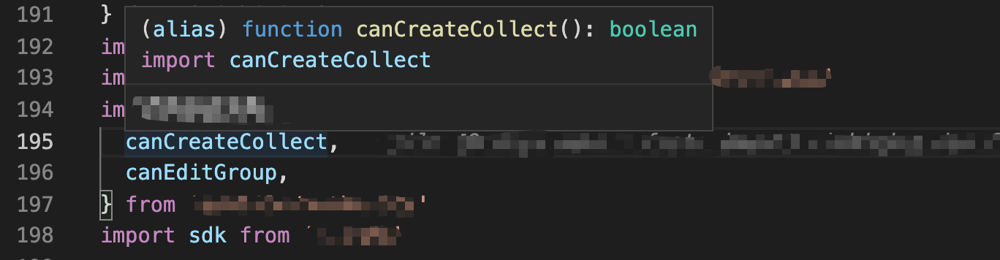

所谓monorepo就是同一个仓库管理多个项目的代码，所谓polyrepo就是多个项目的代码分散在多个仓库。
日事清从19年底开始做微应用拆分到现在整整2年时间，这期间针对微应用打包构建做了很多优化，引入systemjs，抽离公共依赖，统一构建环境等等。随着项目的发展，现在微应用的数量已经突破了30个，而polyrepo模式给代码管理带来了巨大的麻烦，尤其是每次要统一升级基础构建的时候，得挨个在每个微应用里执行同样的命令，想想同样的工作要重复几十遍，简直就是噩梦。所以如何更高效的管理微应用成了当前需要解决的一个痛点。在了解了vue,、babel等大型开源项目的解决方案之后，发现monorepo已经在社区有了比较广泛的应用。前端生态里的工具，比如eslint,、babel等也支持monorepo项目的配置，随着npm@7.0的发布，workspace也成了npm的官方支持，所以现在做monorepo的改造也成了比较水到渠成的事情。
monorepo vs polyrepo
架构对比
从这张架构图可以看出polyrepo和monorepo最大的区别:
polyrepo是一个项目一个仓库，且每个项目都有独立的构建工具
monorepo是多个项目都在同一个仓库，且每个项目共享同一套构建工具
polyrepo的缺陷
polyrepo如前文所说，把每个项目都分散到不同的仓库，当项目的数据急剧增加之后，会给整个团队的代码管理带来巨大的负担.
代码无法方便的同步更新
构建方案的更新往往是需要所有项目同步更新的，或者某些package.json里的依赖包也是需要同步更新，而这些基础代码都是分散在各个项目的仓库里，为了保持所有项目的统一更新，我们只能一个一个的npm install, 或者一个一个仓库的改代码，然后提交到线上，触发ci/cd，这一套组合拳打下来估计一天时间就过去了
多项目更新麻烦
有的需求涉及到同时修改多个项目，在开发的时候，不得不在每个项目单独开分支，单独提交合并，单独触发ci/cd，非常麻烦，而且有的时候修改的项目过多，还容易忘记更新某些项目的代码.
项目之间的引用不方便
如果项目相互有依赖，只能各种npm link关联起来，然后进行调试. 有时候如果依赖关系变得复杂, npm link也会变得特别麻烦.
比如有这么个依赖关系:
项目A -> 项目B -> 项目C
这时候为了正常调试，有可能你得做这些npm link：
- 在项目A里npm link 项目B，npm link 项目C
- 在项目B里npm link 项目C
这么做太麻烦了，而且有的时候很容易把线上的包和本地npm link的包搞混
monorepo的优点
monorepo可以很好的规避上面提到的polyrepo的缺陷
由于所有代码都在一个仓库里，要同步基础构建和基础代码变得非常容易，当涉及到修改多个项目的时候，也不用再分开提交代码了
借助npm workspace自带的特性，可以自动的把依赖的项目给link到node_modules下面，从而可以减少npm link的使用
除了解决polyrepo里提到的缺陷，monorepo还有其他优点.
所有项目代码一目了然
所有项目整合到一个仓库之后，后续对仓库的修改和更新都会更加聚合，每个人都能非常方便的看到每个项目的代码的变更情况，更有利于大家的协作。
且每个人的本地克隆都能非常方便的保持每个项目的最新代码，更容易避免由于某些项目的代码延后带来的bug。
代码风格更加统一
当所有项目都在一个仓库之后，所有项目都能共享同一份eslint配置，指定的commit lint规则也能共享，这样就可以保证所有项目的代码都是符合统一的eslint规范，commit message也是符合规范的
没有100%的合适
对比了polyrepo的缺点和monorepo的优点之后，你会发现好像polyrepo完全不如monorepo，但俗话说得好，没有万能银弹，合适的才是最好的，polyrepo也有他适合的场景.
- 当项目不是很多的时候
- 当项目采用的技术方案和构建方案不是特别相似的时候.
- 当每个项目的更新都需要及其灵活的时候
以上三种情况还是用polyrepo比较合适，monorepo会极大的限制灵活性
monorepo落地
在npm还不支持workspace之前，管理monorepo的方案基础主要有这些:
- lerna https://github.com/lerna/lerna
- Yarn workspace https://yarnpkg.com/features/workspaces
- Pnpm workspace https://pnpm.io/workspaces
lerna是一个第三方的解决方案，他不依赖任何的包管理工具，提供monorepo常用的命令，但是lerna在发布了4.0.0之后，就基本处于无人维护的状态(相关issue)，PR和issue都没人处理，可能和包管理工具原生对monorepo做支持有关系吧.
yarn和pnpm的workspace没有仔细研究过，可以自行查看
在npm@7.0.0发布之后（最近已经更新到npm@8.1.3），npm也支持了workspace，但由于npm的workspace还处在比较早期的阶段，部分monorepo需要的特性都还不支持. 所以我们最终采用的方案是npm@8.x和lerna配合的方案:
npm负责做monorepo的最基础管理，比如依赖安装处理，自动link等
lerna负责monorepo的一些常用功能，比如对比有哪些项目发生了变更，自动更新version，自动生成changelog等
以下内容会涉及到npm workspace的使用，如果不熟悉，可以提前了解: https://docs.npmjs.com/cli/v7/using-npm/workspaces/
项目搭建
搭建一个monorepo项目，主要考虑两个环境的问题: 开发环境、构建环境。
开发环境需要考虑的问题：
- IDE(VS Code)如何更好的辅助开发
- 开发工具如何只在monorepo项目的根目录下配置，微应用都能从根目录共享
- 提高开发效率
构建环境需要考虑的问题：
- 如何只对变更的代码做lint检查，提高lint速度
- 如何只对变更的项目做构建和发布，提高发布速度
eslint
各个微应用共享babel配置
eslint的配置是支持覆盖的, 假设有如下目录结构:
1 | . |
写在monorepoRoot/.eslintrc.js里的eslint配置，都会被project-a/.eslintrc.js和project-b/.eslintrc.js继承。但如果eslint需要使用@babel/eslint-parser作为parser的话就会出现一点小问题，在不做处理的情况下，如果在monorepoRoot下执行:
1 | npm run lint -w project-a |
@babel/eslint-parser会报找不到babel配置的问题，@babel/eslint-parser官方已经提供了解决方案:
1 | module.exports = { |
在各个微应用里的.eslintrc.js配置，把parserOptions.babelOptions.rootMode配置为upward即可，这样只要在monorepoRoot下面有babel的配置即可，不用每个微应用添加babel的配置文件. 对应到这个目录结构，只要在project-a和project-b项目下的.eslintrc.js里添加上这个配置即可
参考: https://github.com/babel/babel/tree/main/eslint/babel-eslint-parser#additional-parser-configuration
适配vue项目
如果你的微应用是vue-cli初始化的项目，你会发现所有通过alias引入的代码在vs code的eslint都会报
Unable to resolve的错误:

这是因为@vue/eslint-config-airbnb里有内置eslint-import-resolver-webpack插件，但这个插件的config参数配置为:
1 | require.resolve('@vue/cli-service/webpack.config.js') |
在普通的vue-cli生成的项目没有问题，上面这行代码没有问题，能通过项目下的vue.config.js解析出webpack配置，然后eslint就能正常解析webpack的alias配置.
但在monorepo会有问题, 我们来看看@vue/cli-service/webpack.config.js里的代码:
1 | let service = process.VUE_CLI_SERVICE |
可以看到，如果没有指定process.env.VUE_CLI_CONTEXT环境变量, 会默认从process.cwd()指定文件夹去找到vue.config.js文件，然后解析出对应的webpack配置，在monorepo场景下, 这个process.cwd()取得的值是monorepo的根目录，不是微应用所在的路径，所以我们需要对每个微应用的.eslintrc.js配置做一些调整:
1 | module.exports = { |
里面的eslint.webpack.config.js的代码为:
1 | const Service = require('@vue/cli-service/lib/Service') |
这样就能让eslint-import-resolver-webpack从微应用所在的根目录去解析webpack的配置了
babel
babel的配置共享
babel的配置也是可以实现只在monorepo的根目录维护一份配置文件，不用每个微应用都单独写同样的配置
官方文档: https://babeljs.io/docs/en/config-files#monorepos
可以配置rootMode参数为upward，即可告诉微应用在运行babel的时候，配置文件可以到monorepo的根目录寻找
但是需要注意，rootMode参数是一个Only allowed in Babel’s programmatic options的参数, 也就是只允许在编程环境的配置项使用，比如webpack的babel-loader里使用，不能直接在babel.config.js里使用
参考: https://babeljs.io/docs/en/options#rootmode
vetur
vetur插件也对monorepo做了额外的支持. 在常规情况下, 我们是不需要在项目的根目录维护一个vetur.config.js文件的，在vs code安装了vetur插件之后，利用默认的配置即可获得足够的开发体验.
在使用monorepo之后就发现了一个问题:

hover到一个引入的方法上面，无法提示这个方法的定义信息，尽管微应用里已经配置了jsconfig.json
这是因为vetur无法识别到这个微应用里的jsconfig.json文件，需要到monorepo下面的vetur.config.js里配置一个projects参数，告诉vetur，你的微应用在哪些文件夹下面:
1 | module.exports = { |

这样再hover到引入的方法上面就可以正常显示了，按住cmd或者ctrl再点击，也可以跳转到对应的地方去
参考: https://vuejs.github.io/vetur/guide/setup.html#advanced
按需构建和按需lint
使用monorepo的模式，有一个比较大的问题就是所有项目都在一个仓库，在线上构建或者做lint检查的时候，如果只对一个项目做了修改，结果却要触发所有项目的构建和检查，这将是非常耗时的。所以需要辨别出来到底修改了哪些项目，只对改动的项目做构建和检查.
这也是我们要引入lerna的原因，npm workspace目前还不支持这些，估计将来也不会支持。
结合lerna的filter参数，比如scope, since等等，可以非常方便的检测出有哪些项目发生了变化，然后对应着只在这些变动的项目里执行对应的构建和lint命令，节省时间.
参考lerna的filter: https://github.com/lerna/lerna/tree/main/core/filter-options
总结
monorepo把分散的大型的微应用项目给整合了起来，如果项目之间有非常多的共性，在维护和开发上会得到非常多的便利。